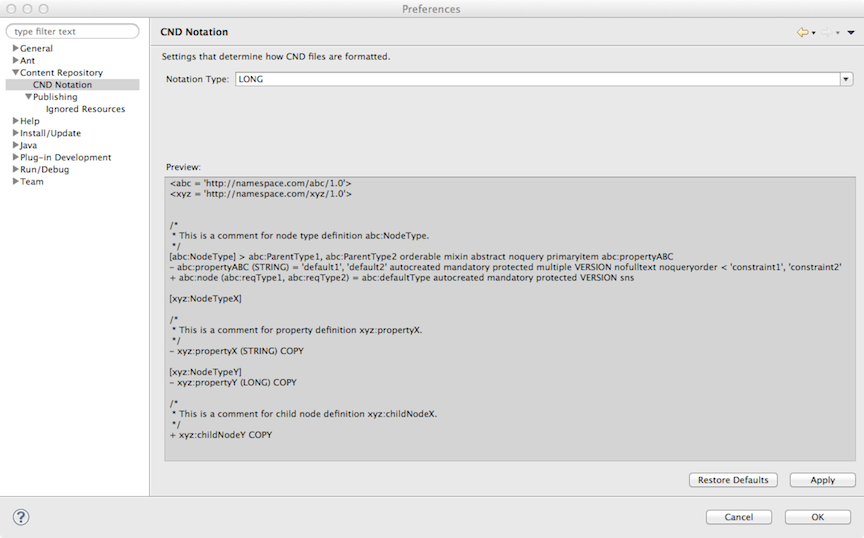

|
|
ModeShape Tools - CND Editor |
The CND Preference Page is used set the CND notation verbosity.
Here is what the CND Preference Page looks like:
The preference page consists of the following:
| Notation Type | the notation type that determines the way the CND file is saved |
| Preview Area | displays a textual example of the way CND files will be saved using the selected notation type |
If the notation type is changed, existing CND files would have to be re-saved in the CND editor to be affected by the preference change.